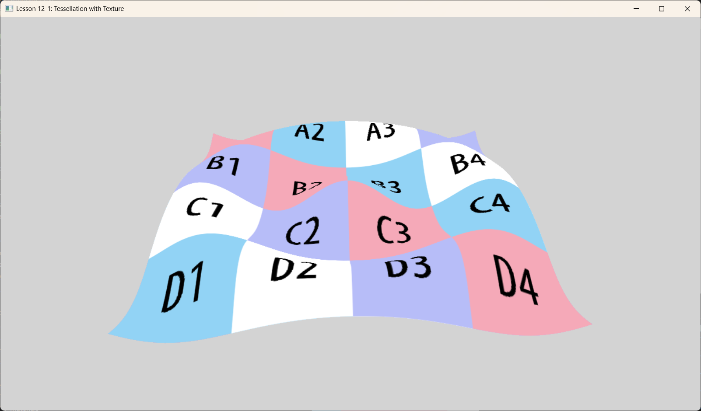

Lesson 12-1: Tessellation & Textured Terrain (曲面细分与纹理地形)

1. Introduction (概述)
本课程演示了 曲面细分 (Tessellation) 与 程序化几何 (Procedural Geometry) 和 纹理 (Texturing) 的结合。 与标准的网格渲染（几何体固定）不同，本课程使用 GPU 曲面细分器将粗糙的四边形细分为高密度的网格。然后，在域着色器 (Domain Shader, DS) 中通过程序化方式修改网格高度以创建波浪，并应用纹理以增加表面细节。
2. Core Concepts (核心概念)
2.1 Tessellation Pipeline (曲面细分管线)
曲面细分阶段允许我们动态生成几何体。 1. Vertex Shader (VS, 顶点着色器): 将控制点（四边形的角点）传递给外壳着色器。 2. Hull Shader (HS, 外壳着色器): - Constant HS: 计算细分因子（细分程度）。在本课中，我们使用静态因子 64.0 来获得高细节。 - Control Point HS: 将控制点传递给域着色器。 - Tessellator: 固定功能硬件，根据因子细分域（四边形）。 3. Domain Shader (DS, 域着色器): 为每个生成的顶点调用。这是几何形状成型的地方。
2.2 Procedural Displacement (程序化置换)
本课程不是读取高度图纹理（地形渲染中常见做法），而是通过解析几何计算高度。 - 来自细分器的 UV 坐标用于插值 Patch 位置。 - 数学函数（余弦波）决定 Y 坐标。 - 由于我们有高细分密度，波浪看起来很平滑。
2.3 Texturing (纹理)
在像素着色器中应用标准的漫反射纹理。UV 坐标在细分网格上插值，确保纹理正确映射到变形的几何体上。
3. Code Analysis (代码分析)
3.1 Shader Logic (着色器逻辑 - src/shaders.hlsl)
Hull Shader (Determination of Detail):
PatchTess ConstantHS(InputPatch<VertexOut, 4> patch, uint patchID : SV_PrimitiveID)
{
PatchTess pt;
float tess = 64.0f; // 高静态细分因子以获得平滑度
pt.EdgeTess[0] = tess; // ... 所有边
pt.InsideTess[0] = tess; // ... 内部
return pt;
}
Domain Shader (Shape Generation): 域着色器充当细分顶点的“顶点着色器”。
[domain("quad")]
DomainOut DS(PatchTess patchTess, float2 uv : SV_DomainLocation, const OutputPatch<HullOut, 4> quad)
{
// 1. 使用 UV 在平面四边形上插值位置
float3 v1 = lerp(quad[0].PosL, quad[1].PosL, uv.x);
float3 v2 = lerp(quad[2].PosL, quad[3].PosL, uv.x);
float3 p = lerp(v1, v2, uv.y);
// 2. 应用程序化置换 (余弦波)
// 注意: 这里我们没有采样高度图，而是用数学计算高度。
float r = sqrt(p.x*p.x + p.z*p.z);
p.y = 1.5f * (cos(r * 0.5f));
// 3. 投影到裁剪空间
dout.PosH = mul(float4(p, 1.0f), gWorldViewProj);
dout.TexC = tex; // 传递插值后的 UV
return dout;
}
Pixel Shader: 简单地采样纹理。
4. Application (应用程序 - src/main.cpp)
- 加载本地纹理（例如
bricks.dds或类似）。 - 将图元拓扑设置为
D3D_PRIMITIVE_TOPOLOGY_4_CONTROL_POINT_PATCHLIST。 - 绘制一个简单的 Quad（4 个顶点）。曲面细分器将其扩展为数千个三角形。
5. Summary (总结)
这一课是地形引擎的基础。虽然这个特定的例子使用 程序化数学函数 来计算高度，但只需将 p.y 计算替换为 gHeightMap.Sample(...) 调用，即可实现完整的 基于纹理的置换贴图 (Texture-Based Displacement Mapping)。